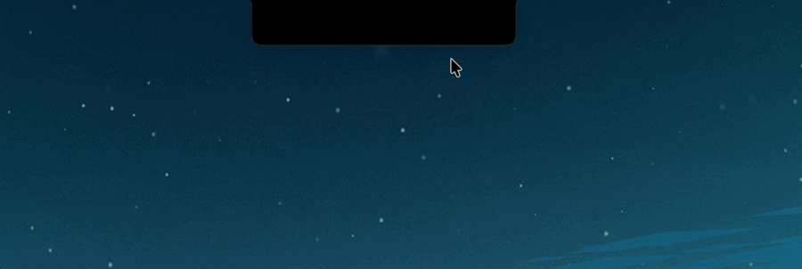
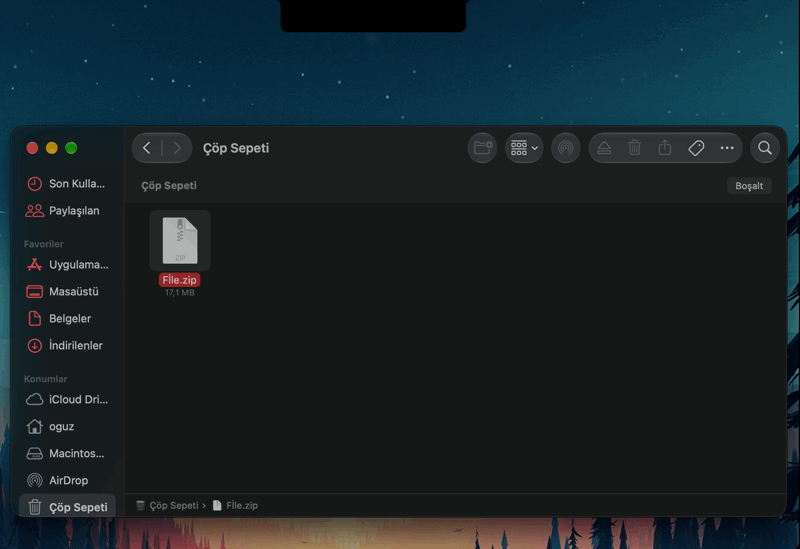
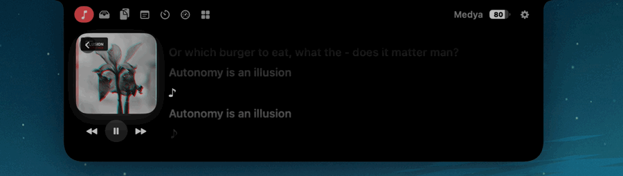
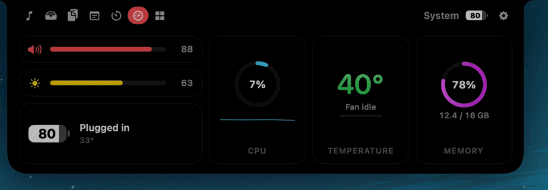
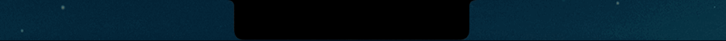

FreeNotch
A free, open-source Dynamic Island for your Mac's notch. Now on Windows too.
Drop files here
Drag a file from the desktop onto the island.
- Setlist ideasOpen with the slow one
- Wi-Fi at the studioLocked
Locked
Encrypted with AES-GCM. The password is never stored.
25:00
CPU
Memory
Temperature
Fan
Demo values. The app reads your Mac's real sensors.
Scroll on the island or press the arrow keys. FreeNotch can replace the system volume overlay entirely.
Nothing sits on your screen. Move the pointer to the top edge and a drop spreads out, then falls into this card. Settings choose whether it opens on hover or on click.
Play it on
Pull a record to play it on the island.
Liner notes
- Free, all the way
- MIT licensed and open source. No ads, no account, no subscription, no tracking.
- Easy on the battery
- It reacts to system events instead of polling. With the island closed and nothing playing, it uses effectively zero CPU.
- Stays on your machine
- No analytics, no telemetry. It only goes online for lyrics from LRCLIB, album artwork and update checks you can turn off.
- Native, not a web view
- Swift, SwiftUI and AppKit on the Mac. C# and WinUI on Windows. Spring animations and a shape that matches the hardware notch.





Two pressings
The Mac version is the full record. The Windows version is a preview pressing that grows with every release.
Track
macOS
Windows
Now playing, artwork and controlsYesYes
Volume HUD that replaces the system oneYesYes
Opens from the top edge on hover or clickLives in the notchYes
Place the island anywhereLives in the notchComing later
ThemesOLED, Graphite, Liquid Glass, FrostedSmoke, OLED
Synced lyricsYesComing
Shelf and drop zoneYes, with AirDropComing
Clipboard historyYesComing
Encrypted notesYesComing
Pomodoro and stopwatchYesComing
System statsYesComing
Mirror, Keep Awake, Color PickerYesComing
RequiresmacOS 14+, Apple SiliconWindows 11, x64 or ARM64
Take it home.
It's a single download with no account, and the Mac version keeps itself up to date.